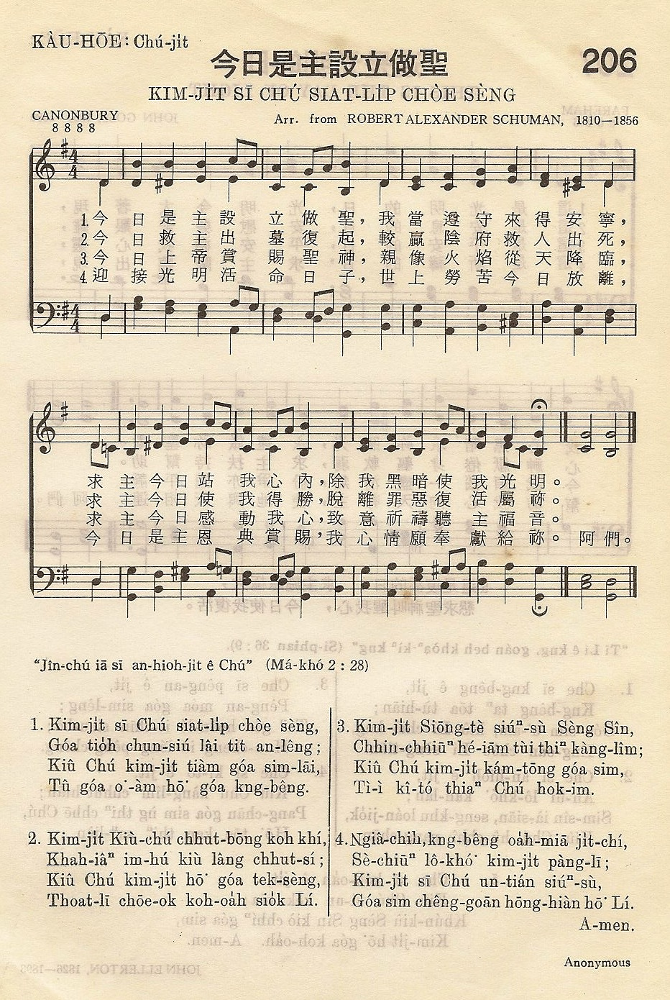
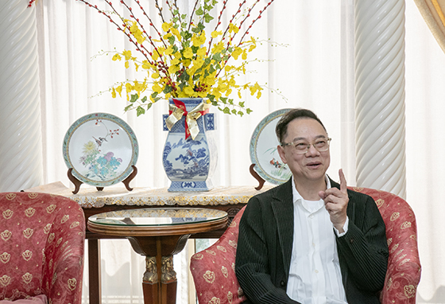
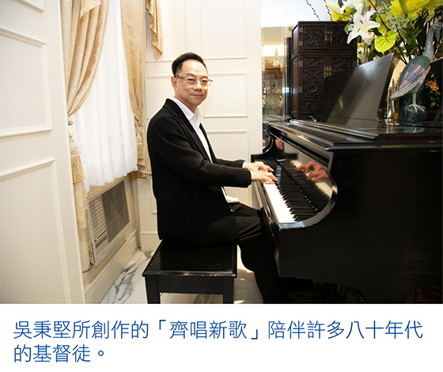
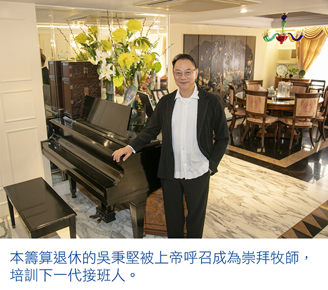

|
|
【齊齊來讚美上主】 |
|
|
齊齊來讚美上主，（哈利路亞）， |
|
|
|
|
|
|

齊齊來讚美上主，（哈利路亞） https://www.youtube.com/watch?v=GZYsDNOxYyY

從心所欲 吳秉堅:四十年音樂創作路
第 2845 期（2019 年 3 月 3 日） ◎ 一個字一顆心 ◎ 採訪：鄭丹華．攝影：本刊記者
分享： Whatsapp :: 電郵 ::  臉書 ::
臉書 ::  推特
推特

「神是愛，祂愛我比天高，神是愛，祂救我為我釘十架……」一曲來自「齊唱新歌」系列的《神是愛》，在上世紀八零年代基督徒圈子甚受歡迎；創作人吳秉堅自謙，沒料到這首平凡的歌大受歡迎，後來更被傳媒稱為香港「聖樂革命之父」。今年，他七十歲了，從心所欲，聯同城中傑出音樂人，於三月首兩天舉行了奮興佈道音樂會—「神祢在掌管《HIS70ry齊唱．吳秉堅之歌》自傳第一章（香港站）」，回應神對他一生的厚愛，結果兩晚皆滿座。


由小司琴到大使命
吳秉堅出生小康之家，小學時期姊姊學彈鋼琴，他就在背後「觀摩」，初中才正式學琴，後來成為教會司琴，初露頭角。他赴海外留學，大學主修建築。畢業後返港，從事地產事業，工餘到處做司琴。
有一次，蘇恩佩(突破機構創辦人之一)看見他手指在鋼鍵飛舞，肯定這位三十來歲小伙子的音樂天賦，跟他說：「你要為年輕人寫廣東話詩歌！」，並邀請他參加突破民歌創作比賽。當年香港基督教詩歌多為翻譯版本，不少詞不對音。於是，他第一次作曲，交了兩首歌參賽，獲冠、亞軍，結識一班擁抱共同夢想的音樂朋友——翁慧韻、陳芳榮等，一起創作具香港特色的廣東話基督教詩歌，並在一九八二年推出《齊唱新歌第一集》；當中《願》、《追》、《神是愛》等由吳秉堅作曲，他更包辦《神是愛》的作曲及填詞。「齊唱新歌」系列在八零至九零年代間共推出十二集，經典詩歌《神你在掌管》、《將心給我》《獻上今天》等，為香港基督教詩歌掀起新潮流。吳秉堅笑話當年，他們每星期相聚，互相批評，用一股傻勁做神差遣的工作。箴言二十三章二十六節：「我兒，要將你的心歸我，你的眼目也要喜悅我的道路。」
由兼職到全職事奉
他們成立機構的異象，早於一九八一年開始蘊釀；隨後，吳秉堅和翁慧韻、陳芳榮於一九八三年成立香港基督徒音樂事工(Hong Kong Association of Christian Music Ministry Ltd.，簡稱：ACM)；同年，曾路得、鄧惠欣加盟。翌年，往北美巡迴佈道。一九八六年，ACM組成基督教組合「赤道」，推出《有情天地》專輯，當中吳潔梅主唱的《無言者》，由吳秉堅作曲，趙孟準、翁偉微填詞：「長路�堙A我獨行看車過；夜已深，地鐵中我默言。從未想，我竟似過客，我心中滿是話，沒處吐傾。」刻劃香港人內心寂寞，摘下香港電台金曲龍虎榜第七名。吳秉堅說：「我從來沒想過基督教歌曲，可以打入主流樂壇。」
他繼續做地產生意，兼顧ACM的音樂事工，推出音樂專輯、舉辦巡迴音樂佈道會等。具領導才能的他，追求完美，有時難免忽略別人，團隊有不少悲歡離合。他眼見台上大家親如一家，台下盡是不和，深感事工發展必須定睛在神的國度–「神看重甚麼？」
四十二歲那年，他的事業如日方中，腸內竟發現兩個腫瘤，有機會是罹患腸癌。幸好切除腫瘤後，身體無恙。大病後，他人生觀也改變，決定全職事奉，於二零零二年創立全心製作有限公司，藉音樂、影音及書刊產品，傳揚福音，牧養富音樂恩賜的弟兄姊妹。他說：「我做ACM時期，目標為本，做年度計畫、目標、評估、檢討，但現在我覺得完美與否並非首要，重要是建立人，相信神會帶領。神改變了我！」
由退休到開荒
六十歲時，他看到昔日以色列人經歷神的事蹟，或打勝仗，會築祭壇記念神的作為。六十一歲遇上鍾氏兄弟—鍾一匡和鍾一諾，兩兄弟邀請合作，重新編曲演繹吳秉堅創作的歌曲，更有過百位國際頂尖音樂人參與製作《鍾氏兄弟—齊唱。吳秉堅之歌》；吳秉堅聽完試版專輯震撼不已。此專輯打入主流樂壇，獲不少獎項。他和鍾氏兄弟再合作推出《X-Over Non-Stop合心飛航》和《We Are One》專輯之後，以為可以退休，但神呼召六十多歲的他去開荒—二零一四年，美國Saddleback Church邀請他成為香港分會的崇拜牧師(worship pastor)，他花了二十二個月建立敬拜團隊、培訓接班，然後功成身退；他知道入迦南地是下一代。他想對神說：「祢要我做的事，我一定盡心盡力做！」
他感謝神愛他，甚至在他未認識神，三歲時從家中洋台(三層樓高)失足掉在街上，竟奇蹟地毫無損傷；當時的日報記載了這事，還訪問了一位路過的老伯，這老伯對記者說自己曾看見到一隻手托住這個孩子落地。吳秉堅說當時年紀太少，坦白說無甚印象，但一直堅信神的恩手保護着他——而昔日街坊心中的小飛俠，今天亦已一飛沖天，站在音樂舞台，以音樂見證神的作為！
http://www.christianweekly.net/2019/ta2037635.htm